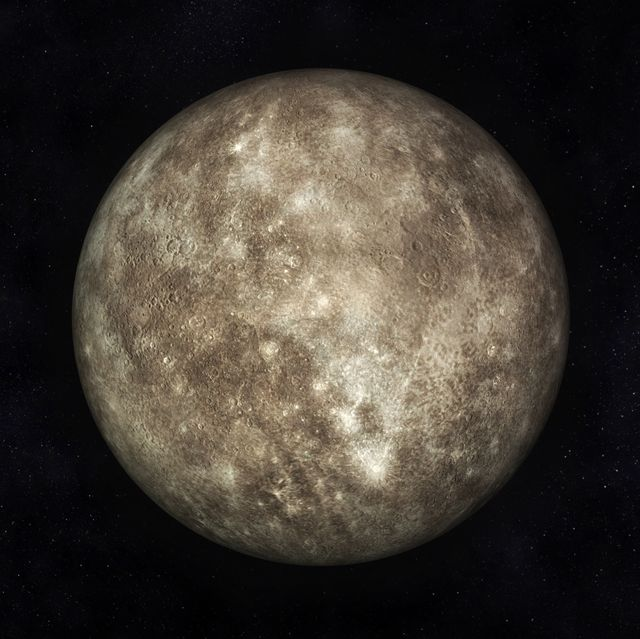

Mars

Mercury does not have any moons or rings..
Mercury is the closest planet to the Sun and due to its proximity it is not easily seen except during twilight.
For every two orbits of the Sun, Mercury completes three rotations about its axis
A solar day on the surface of Mercury lasts 176 Earth days.
Mercury is just 4,879 Kilometres across its equator, compared with 12,742 Kilometres for the Earth.